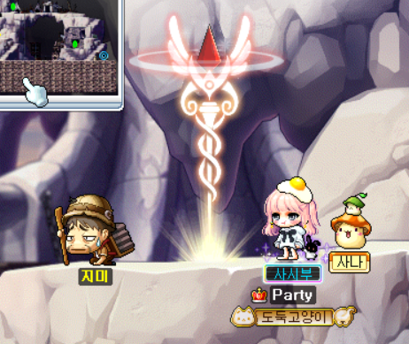
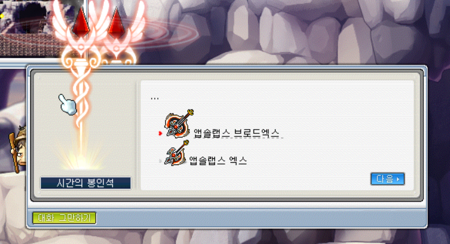
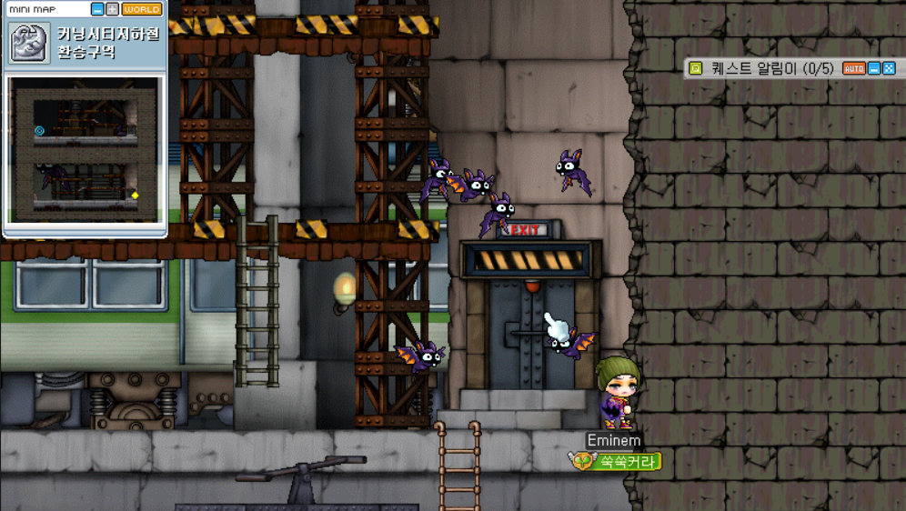
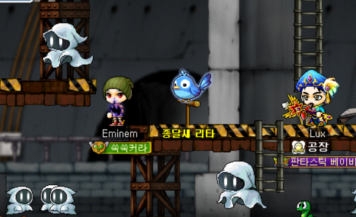
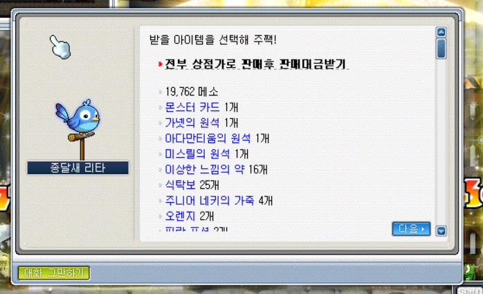
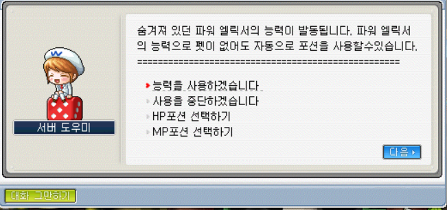
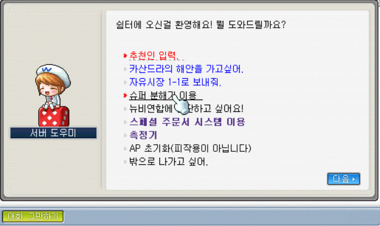

-고유 컨텐츠-
추천인 입력 (초기 자금 벌기) 잠수 컨텐츠(낚시) 마우스 사용처 정령의 반지 만들기 파프니르 무기 및 강화 설명파프니르 무기는 보스인 '핑크빈'에게 얻을 수 있습니다.
파프니르 무기 강화 설명정복자 lv.300 달성 후에 황혼의 페리온으로 가시면 아래의 사진에 나와있는 NPC에게 가셔서 강화하시면 됩니다.
정복자 lv.300 이상의 캐릭터가 말을 걸면 다음과 같은 대화창이 뜨면서 강화를 진행할 수 있습니다
-필수 스킬-
장인의 혼/메이커/용사의 의지/영웅의 메아리-돈 벌이-
레이스 노가다(레노) 하는 방법커니시팅 지하철로 가셔서 매표소에 있는 포탈을 탄 후 오른쪽으로 쭉가다가 아래의 '환승구역'에서 아래의 문 포탈을 타시면 2초선 맵으로 입장하게됩니다
2호 1구역에서 오른쪽으로 쭉가셔서 문에서 포탈을 타시면 2호선 2구역에 도착할 수 있습니다
레이스 노가다는 커닝시팅 지하철 맵인 '2호선 2구역'으로 가신 후에 아래의 사진에 보이시는 NPC에게 말을 거시면
마우스 50개를 주면 대신해서 아이템을 주워주구 다시 말을 걸면 해당 맵에서 몬스터를 잡아서 획득했는 아이템을 관리할 수 있습니다.
핑크빈 입장 시 필요한 이이템인 카오스 구슬을 하루에 한 번 수행할 수 있는 '결계'퀘스트를 통해 모으는 것을 말합니다. 핑크빈 입장 시 필요하기 때문에 이를 모아 판매하여 돈을 모으는 방법이 되겠습니다.
핑크빈 선행 퀘스트를 모두 완료해야 진행이 가능합니다!
-편의 기능-
명령어 창고-> lv.10 이후에 채팅창에 '@창고'를 이용해서 창고를 호출할 수 있습니다.

커닝시티에 있는 지하철 매표소로 가서 몽땅따에게 마우스 50개를 주시면 얻는 '누군가의 재료가방'을 가지고 있으시면 '@기타창고' 명령어를 이용하여서 아이템을 최대 21조개를 넣을 수 있습니다. 또한 교환 불가한 아이템을 여러 개 넣을 수 있습니다.
-> '캐시샵 > 상점모음 > 메플 상점 혹은 장비 상점'에서 lv.100 이하 아이템 구매 가능
140제 방어구는 '파괴된 헤네시스'에 '헬레나'에게서 '꿈의 조각' 40개와 교환하여서 얻을 수 있습니다. (lv.160 이상)
lv.150, lv.160 방어구는 '캐시샵 > 제작교환'에서 얻을 수 있습니다.
(단, lv.150 아이템은 정복자부터 lv.160 아이템은 정복자 레벨150부터 제작 가능합니다.
또한 무기류는 핑크빈(lv.150제 드랍) 스우(lv.160제 드랍)에게서 얻을 수 있습니다.)
-> '캐시샵 > 지역이동'에서 마을, 추천 사냥터, 서버 쉼터, 자유 시장으로 이동하실 수 있습니다.
-> '캐시샵 > 만능 주문'에서 주문서를 선택하실 수 있습니다. 주문서마다 필요한 '만능스톤'과 '만능주문서'가 다르니 잘 확인하시구 교환하시기 바랍니다.
-> 보스가 등장하는 맵에서 '캐시샵 > 특별메뉴 > 보스의 얼굴을 보려면 얼마나 남았는가?'을 통해 보스가 나오는 시간 혹은 등장 여부를 확인할 수 있습니다.
또다른 방법으로 '@보스' 명령어를 이용해서 확인할 수 있습니다.
서버 쉼터에 있는 자판기에게 가면 '만년묵은파워엘릭서'를 5천만원에 구입할 수 있습니다.
'만년묶은파워엘릭서'를 소지하고 있을 경우 '@포션' 명령어을 채팅에 칠 경우 아래의 사진과 같은 대화창이 나옵니다
위의 대화창에서 HP,MP 등의 자동포션기능을 설정할 수 있습니다. 주의할 점이 있다면 서버 변경 시에 설정값이 초기화되기에 다시 재설정할 필요가 있습니다.
서버쉼터에 있는 서버도우미 NPC에게 말을 걸면 lv.100제 아이템들 한꺼번에 분해할 수 있습니다
교환 불가능한 아이템을 다른 유저에게 주고 싶을 경우에는 '캐시샵 > 커뮤니티 > 선물하기'를 이용하셔서 원하는 유저에게 아이템을 주시면 됩니다.
은행 기능을 사용해서 유저 간의 실제 은행과 같은 서비스를 이용할 수 있습니다.
명령어 '@은행'을 채팅창에 치시면 은행 관련 대화창이 나타납니다.
-코디 방법-
코디 방법 랩소디 헤어/성형 모음(2020-08-08) 미리 코디 해보기!-자주하는 실수 및 오류-
실수로 찍은 AP, SP 되돌리기 옷이 안 입어질 경우->"캐시샵->외모 변경->중성화"로 가셔서 캐릭터의 성별을 중성화를 하신 다음에 옷을 다시 입어보세요!
-> 헤네시스에 있는 루시드에게 가시면 아래의 사진과 같이 대화창이 열립니다

위의 대화창에서 "현재접속 해제", "끼인맵 탈출", "외모초기화" 중에 해당 되는 상황에 고르셔서 문제를 해결하시면 됩니다
-기타-
캐시템에 비보 부여하기 결혼 하는 방법(중성화를 푼 다음에 하세요!)-일일 퀘스트-
경험치 주는 일일퀘스트 말하는 나무 퀘스트퀘스트 보상으로 주는 '힘의 결정체'는 쥬얼이어링을 만들때 사용됩니다. 추가로 랜덤하게 얻는 '애너지드링크'는 강화 크리스탈 제련에 사용됩니다. (9/1 기준 유적 발굴단에 위치)
-알아두면 좋은 퀘스트-
도둑 고양이와 네로헤네시스에 있는 '도둑 고양이'에게 말을 걸어 아이템을 교환을 할 경우 '별빛의 결정'이라는 아이템을 얻을 수 있습니다.


이 아이템을 옆에 있는 네로에게 말을 걸면 랜덤한 아이템으로 바꿔줍니다.
'별빛의 결정'을 10개를 모아 '도둑 고양이'에게 주면 '모험의 서'를 줍니다.
-사냥터 공략-
초보자 공략 lv.10~lv.30 lv.30~lv.60 lv.60~lv.70 70~100까지 폭업하는 방법아쿠아리움에 있는 망둥이란 몬스터를 잡아 빠르게 렙업하는 방법입니다.
망둥이 집을 부술 유저가 한 명있어야 하기에 뉴비가 솔플로 하기에는 무리가 있습니다.
집을 부숴줄 유저가 있고, 캐릭터의 명중률이 충분하면 lv.70부터 할 수 있습니다.
아래의 명중률 계산기를 이용해 망둥이에게 MISS가 뜰 확률을 확인해보세요.
명중률 계산기아래의 링크는 구체적인 망둥이쩔 하는 방법을 소개하는 글입니다.
망둥이쩔 하는 방법 소개추가 팁 : lv.105 이후에는 피아누스를 잡아 폭업하는 쩔이 가능합니다.
-사냥터 가는 방법 (정복자 이후)-
식욕의 균열(식욕)(lv.180~)루디브리엄 -> 시간의 통로(택시 이용 추천!) -> '제나'에게 말을 걸어 이동

파괴된 헤네시스 -> 어두운 포자언덕 -> 음산한 콧노래 오솔길 -> 에레브 갈림길 -> 요새 입구 -> 기사단 제 1구역 -> 기사단 제 2구역
루디브리엄에 있는 표지판 클릭해서 판타스틱 테마파크로 이동!

테마파크에서 오른쪽으로 이동!

계속해서 오른쪽으로 이동하다 '퍼니 스테이션 2'에서 아래의 사진에 있는 포탈을 타주세여

그 후 오른쪽으로 계속 이동하셔서 오른쪽에 있는 포탈을 타주세요~
'익스트림 스테이션 1'에서 아래의 사진에 있는 포탈을 타주세요

계속 오른쪽으로 이동하시다보면 '판타지 스테이션 1'에 도착하는데여~ 역시 오른쪽 끝에 있는 포탈을 타시면 도착!


-아이템 스펙 확인하기-
파프니르 무기 작/강화 정보(150제) 앱솔랩스 무기 작/강화 정보(160제)| 무기 선택 | 공격력/합마 (중급) | 공격력/합마 (졸업) |
|
|
| 강화 전 무기 | 강화 횟수 | 강회 후 무기 | |
-아이템 제작-
*S급 쥬얼링
S급 쥬얼링 제작 1 S급 쥬얼링 제작 2*SS급 쥬얼이어링
ss급 쥬얼이어링 제작 및 강화*ETC
치클 제작하기 1 치클 제작하기 2 치클 제작하기 3 치클 제작하기 4-유용한 아이템-
'후원 상점 > 기타'에서 편리한 버프 티켓 아이템을 제외하고 기간제 아이템의 기간을 늘릴 수 있습니다.
모험의 서모험의 서는 '@이동'명령어를 통해 다양한 맵으로 바로 이동할 수 있도록 도와주는 아이템 입니다.
'@워프'명령어를 통해 맵 위치를 저장하구 저장도니 맵 위치로 이동할 수 있는 기능을 가지고 있습니다.
모험의 서를 소지할 경우 드롭율 +1, 메소율 +1 올려줍니다.
'캐시샵 > 상점 모음 > 후원 상점 > 편의 기능' 에서 후원 코인 10개에 30일 기간제 모험의 서를 얻을 수 있습니다.
또다른 방법으로는 별빛의 결정 10개를 모아서 3일 기간제 모험의 서를 얻는 방법이 있습니다.
별빛의 결정 얻는 방법소지하고 있을 경우 포인트 획득량이 증가합니다.
'캐시샵 > 상점 모음 > 후원 상점 > 편의 기능' 에서 후원 코인 10개에 30일 기간제 모험의 서를 얻을 수 있습니다.
장착하고 있을 경우에 30% 추가 경험치가 있습니다.
'캐시샵 > 군밤 코인 > 장비'에서 군밤코인 10개를 가지고 정령의 펜던트 3일치를 얻을 수 있습니다.
'캐시샵 > 상점 모음 > 후원 상점 > 편의 기능'에서 후원 코인 30개에 30일치의 편리한 버프 티켓을 얻을 수 있습니다.
'@자동버프'를 사용할 경우 개인당 하루에 10번 '스페셜 영웅의 메아리'(= 데미지 15% 증가) 스킬을 사용할 수 있습니다.
스킬을 1회 사용할 때마다 100만 메소가 소비됩니다.
이 아이템은 예외적으로 후원 코인을 이용한 기간제 아이템 늘리기 기능을 이용할 수 없습니다.
-포인트-
포인트가 무엇인가요? ('MACLIP'님 블로그) GP포인트가 무엇인가요?길드 포인트를 의미합니다. 길드에 마스터/부마스터에게서 길드포인트를 이용하여 여러아이템으로 교환이 가능합니다.
5000GP교환권 획득법 : '캐시샵 > 커뮤니티 > [테스트녀]길드포인트 담당자 > 유저GP상점' 경로로 '5000GP 교환권'을 얻을 수 있습니다.
길드 스킬 사용법 : '캐시샵 > 커뮤니티 > [테스트녀]길드포인트 담당자 > 길드스킬' 경로로 길드스킬을 사용할 수 있습니다.